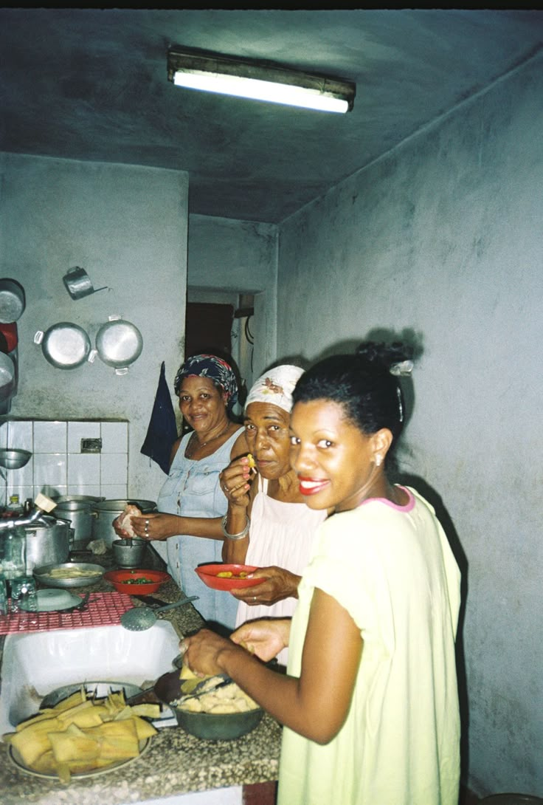

Mommy’s Sou Chef was baked into life in September 2017, right in the heart of Cape Town. It all started with a daughter who missed the taste of her mom’s kitchen and dreamed of sharing it with the world. Blending a pinch of nostalgia with a dash of French flair, she created a bakery that brings Mom’s beloved recipes to life—one buttery bite at a time. Mommy’s Sou Chef isn’t just about pastries; it’s about memories, family, and the sweet joy of feeling right at home

To become the go-to bakery that bridges generations, creating a timeless space where tradition meets creativity, and every sweet bite tells a story of heritage and joy.
Our mission is to bring local natives back to their cherished childhood memories through old ingredients and reinvented recipes, while introducing the youth to a taste of the past—allowing all ages, from children to elders with a sweet tooth, to experience a different time and place without leaving their community.